Como funciona uma integração
A integração liga o ERP da Olist a um canal de venda, hub ou plataforma. Em Minhas Integrações você consulta o que já está na conta, com o status da conexão e a ação gerenciar, e inicia uma nova conexão pelo catálogo Adicionar integração.
A instalação pela tela leva à configuração da integração e para antes de conectar. Para a conta ficar pronta, o mesmo fluxo inclui o produto com SKU, a natureza de operação de saída e os depósitos de estoque.
Importante
- Na Nuvemshop, a conexão não se completa só no ERP: instale o Sistema ERP da Olist na loja de aplicativos da Nuvemshop. A tela avisa quando você não está logado nessa plataforma.
- Se a chave do iFood foi trocada, algumas lojas podem ter sido desconectadas. Autorize de novo a integração para restabelecer a conexão.
- O estoque inicial do produto fica ao lado de um depósito que já existe na conta.
Instruções
Consultar as integrações da conta
-
Acesse Início > Integrações.
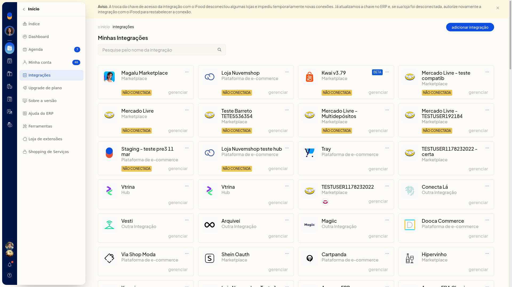
-
Em Minhas Integrações, use Pesquise pelo nome da integração.
-
Veja as categorias Marketplace, Plataforma de e-commerce, Hub e Outra Integração, o status da conexão e a ação gerenciar.
-
Leia o aviso do iFood se a loja tiver sido desconectada pela troca da chave de acesso. A lista mostra as integrações da conta e o que ainda não está conectado, sem alterar a conexão.
Iniciar uma nova integração
-
Em Minhas Integrações, clique em Adicionar integração.
-
Filtre por todas as integrações, marketplaces e hubs, plataformas de e-commerce ou outras integrações, ou pesquise em Pesquise por integrações ou canais de venda.
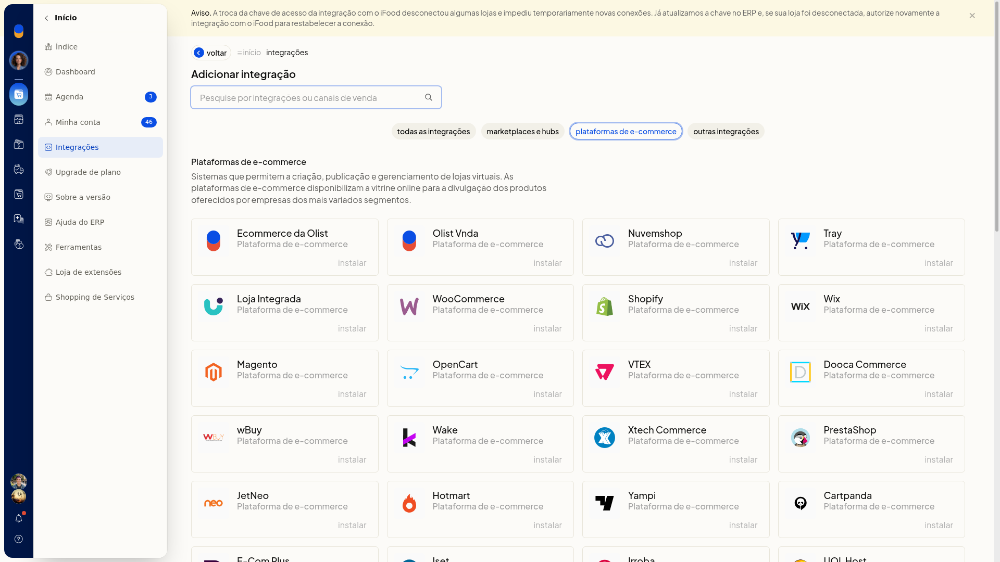
-
No card desejado, clique em instalar. Alguns cards indicam via HUB ou BETA.
-
Na tela da integração, preencha Nome da integração no ERP. O campo não é obrigatório. Não clique em conectar. A tela fica pronta para conectar, sem concluir a conexão.
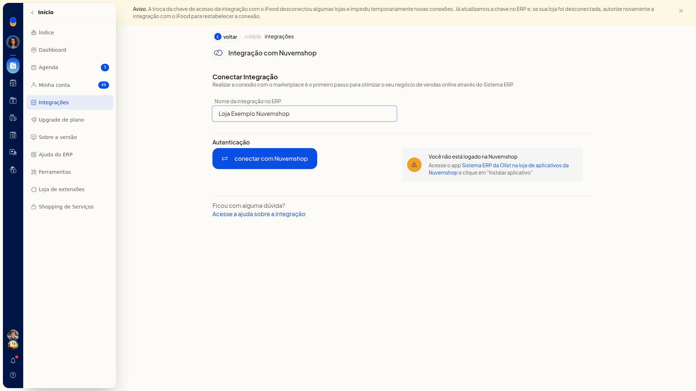
-
Se aparecer o aviso da Nuvemshop, instale antes o Sistema ERP da Olist na loja de aplicativos da Nuvemshop. O link Acesse a ajuda sobre a integração fica na mesma tela.
Cadastrar o produto com SKU
-
Acesse Cadastros > Produtos.
-
Na lista, busque por nome, SKU ou GTIN. As abas separam todos, simples, kits, variações, fabricado e matéria-prima. A lista mostra as colunas Código (SKU) e Integrações e o botão receber do e-commerce.
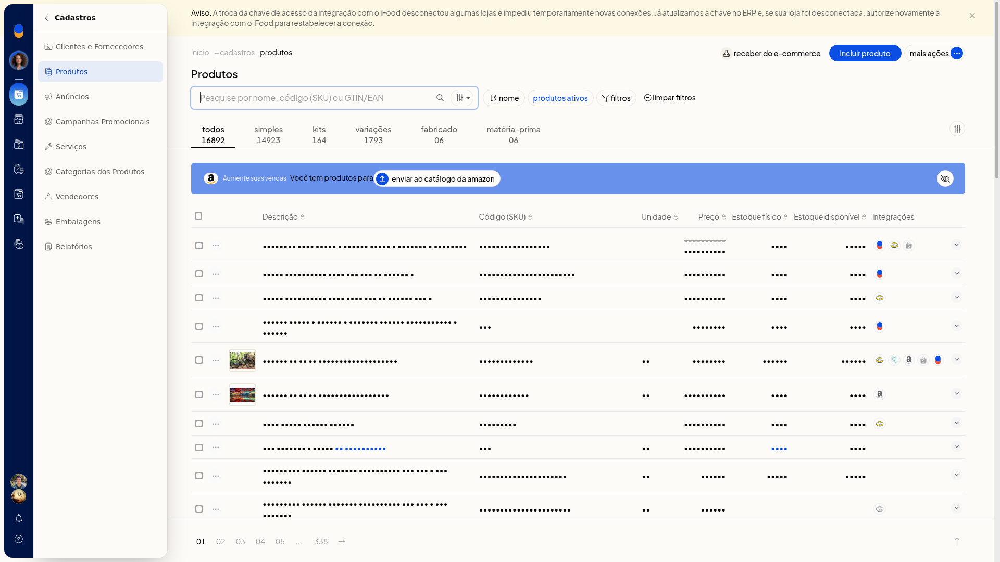
-
Clique em incluir produto.
-
Em Dados Gerais, escolha o tipo e preencha os dados do produto. O SKU aparece com o rótulo Opcional. O estoque inicial fica ao lado de um depósito. Nenhum desses campos é obrigatório.
Identificação
- Tipo do produto: Simples, Kit, Com variações, Fabricado ou Matéria-prima
- Nome
- GTIN
- Origem
- Unidade: a ajuda da tela indica que a unidade é necessária para a nota fiscal
- NCM
- SKU: rótulo Opcional
- CEST
Preços, peso e estoque
- Preço de venda
- Preço promocional
- Peso líquido
- Tipo embalagem
- Largura, Altura e Comprimento: altura e comprimento em cm
- Controlar estoque: Sim ou Não
- Estoque inicial: quantidade ao lado de um depósito já existente
- Estoque mínimo e Estoque máximo
- Sob encomenda: Sim ou Não
- Controlar lotes: Sim ou Não
- Localização
- Dias para preparação
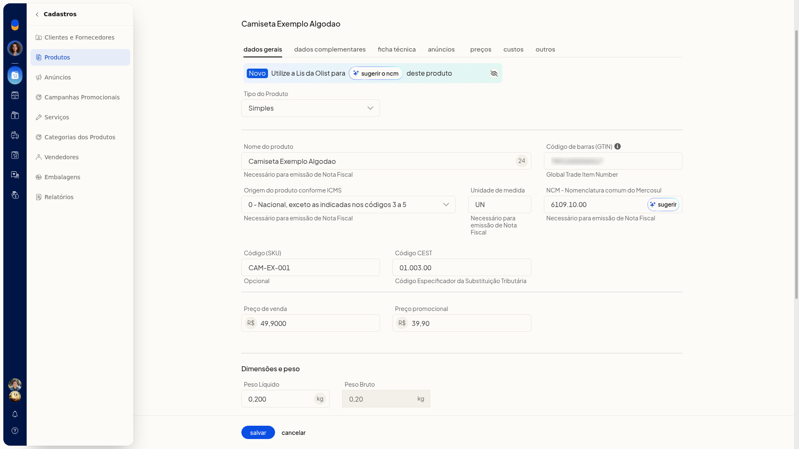

- Clique em Cancelar para voltar à lista sem gravar. O produto não entra na lista.
Cadastrar a natureza de operação de saída
-
Acesse Configurações > Configurações ERP > Notas Fiscais > Naturezas de operação de saída.
-
Filtre a lista por ativas, se precisar, e clique em Incluir natureza de operação.

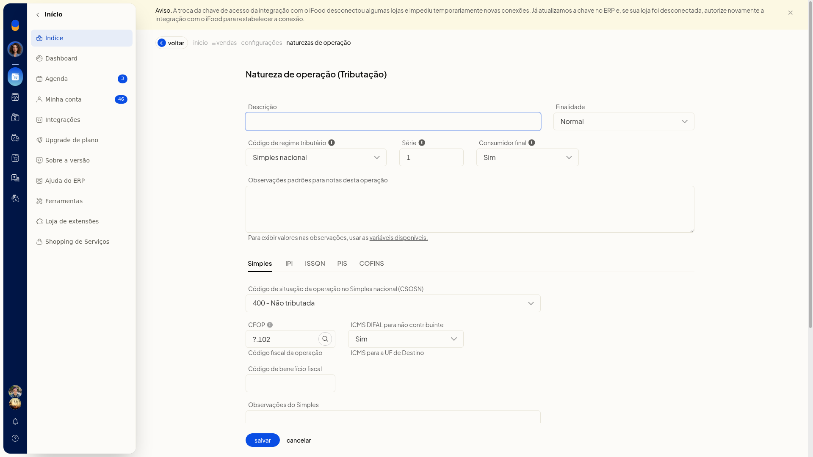
-
Preencha a Descrição e revise os demais campos. Nenhum campo dessa tela aparece marcado como obrigatório. Série e CFOP já podem vir preenchidos ao abrir o formulário.
- Finalidade: Normal, Devolução, Bonificação ou Remessa
- Código de regime tributário: Simples nacional, excesso de sublimite, Regime normal ou MEI
- Série
- Consumidor final: Sim ou Não
- CSOSN: 101, 102, 103, 201, 202, 203, 300 Imune, 400 Não tributada, 500 ou 900 Outros
- CFOP
- ICMS DIFAL para não contribuinte: Sim ou Não. A ajuda trata do ICMS para a UF de destino
- Código de benefício fiscal
- Observações padrões, Observações do Simples e Informações ao Fisco

-
Abra Configurações avançadas para revisar preço, expedição, DRE, funrural, Zona Franca e a composição do total da NF-e. Há também adicionar exceção.
- Preço considerado: Preço de custo ou Preço de venda ou promocional
- Enviar para expedição: Sim ou Não
- Considerar como receita, CMV e impostos no DRE
- Compra de produtor rural: Sim ou Não
- Permite lançamento e reserva de estoque: Sim ou Não
- Alíquota funrural
- Descontar funrural do total faturado: Sim ou Não
- Venda para Zona Franca de Manaus: Não, Sim com desoneração para todos, ou Sim só para origem nacional
- Redução da base de ICMS-ST: Padrão ou Antes de somar o IPI
- Descontar desoneração do total da NF: Sim ou Não
- Itens compõem valor total da NF-e: compõem total da nota fiscal; compõem total, mas sem faturas no XML; ou não compõem, com totais zerados
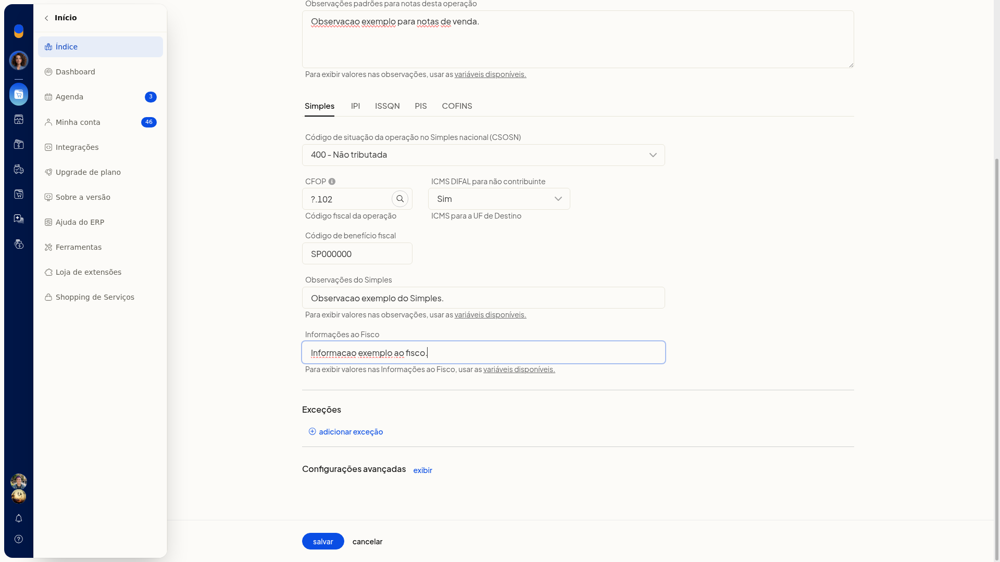
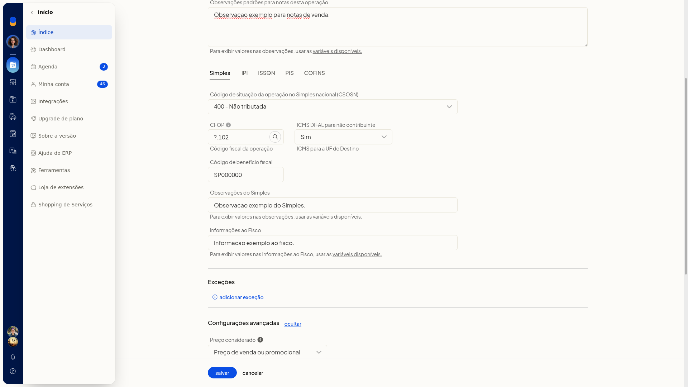

-
Clique em Cancelar para voltar à lista sem gravar. A natureza não é incluída na lista.
Cadastrar o depósito de estoque
-
Acesse Configurações > Configurações ERP > Suprimentos > Depósitos de estoque.
-
Na lista ativa, use Pesquisa... e o filtro Ativos. Um depósito existente pode aparecer marcado como Depósito Padrão. O cadastro é Incluir depósito.

-
Clique em Incluir depósito.
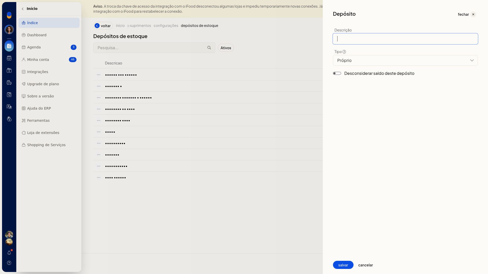
-
Informe a Descrição do depósito e o Tipo. Nenhum campo do depósito aparece marcado como obrigatório. Próprio vale para os canais de venda e é compartilhado entre eles. Exclusivo para um canal de venda é o depósito externo, em geral fulfillment de um canal. Desconsiderar saldo deste depósito também aparece nesse painel.

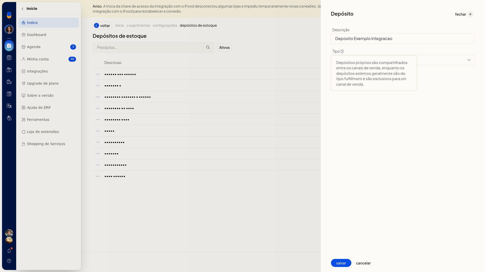
-
No tipo exclusivo, informe CNPJ destinatário e, se for o caso, CNPJ Remetente. Dá para adicionar outro CNPJ e marcar Criar transferências de estoque para notas fiscais com os CNPJs informados acima. O CNPJ destinatário é de quem recebe a nota de transferência, em geral o canal ou o centro de distribuição. No modelo unificado de várias empresas, o CNPJ Remetente é validado com o CNPJ destinatário para identificar o depósito da entrada.
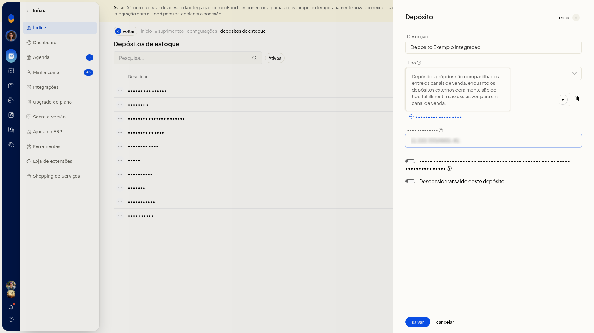
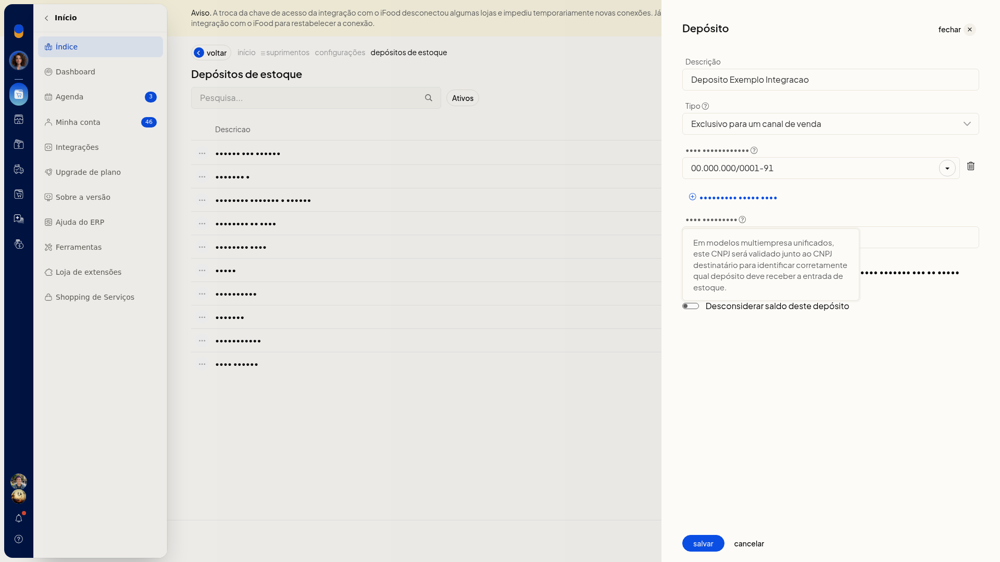

-
Clique em Cancelar para voltar à lista sem gravar. A lista continua com os depósitos ativos e o depósito padrão já marcado.
-
No menu da linha de um depósito já existente, as ações são Inativar depósito e Tornar depósito padrão. Não as confirme se a intenção for só consultar. O aviso do iFood pode aparecer no topo da tela.
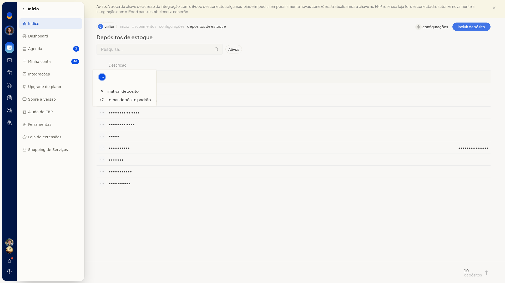
Ver a reserva de estoque por depósito
-
Em Depósitos de estoque, clique em Configurações. Mais ações aponta para as configurações de depósitos.
-
Leia Reserva de estoque individual por depósito e o texto de ajuda sobre o controle individual da reserva.

-
Clique em Cancelar sem salvar. A reserva por depósito não é alterada.
Consultar o saldo por depósito
-
Acesse Suprimentos > Controle de Estoques.

-
Abra o filtro depósito e escolha Todos ou um depósito da conta. O saldo exibido fica associado ao depósito escolhido, sem criar depósito.
-
Se precisar, use Transferir entre depósitos. A transferência pode ser preenchida e cancelada antes de confirmar, sem criar a transferência.
Resultado
Minhas Integrações lista as integrações com o status de conexão e a ação gerenciar. O catálogo Adicionar integração abre a tela da integração, com o nome no ERP e sem conexão concluída. Cancelar o novo produto, a nova natureza ou o novo depósito volta à lista sem incluir o registro.
Informações adicionais
- O status da conexão pode aparecer como NÃO CONECTADA, com a ação gerenciar.
- O filtro de categoria do catálogo reduz os cards. O filtro de plataformas de e-commerce restringe o catálogo a essa categoria.
- O filtro de depósitos usa Ativos e Inativos.
- Na lista de depósitos, um depósito pode estar marcado como Depósito Padrão.